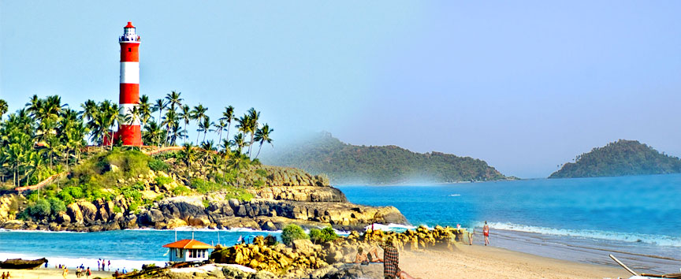
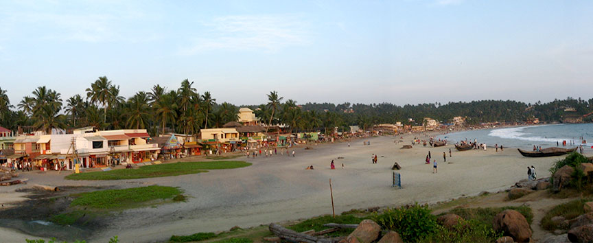
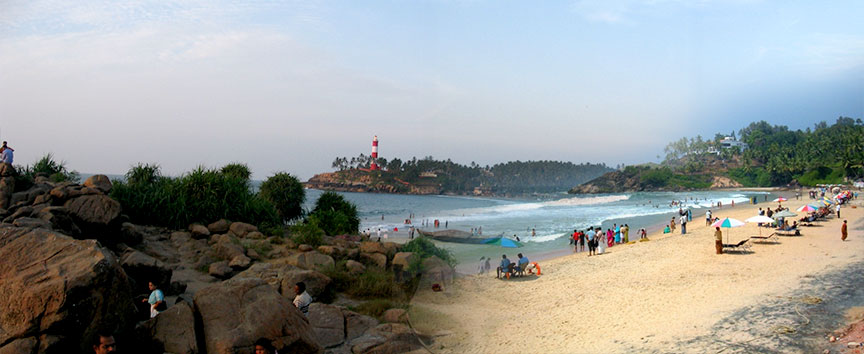
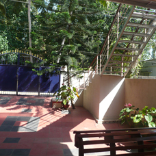
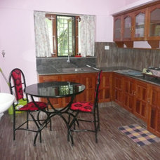
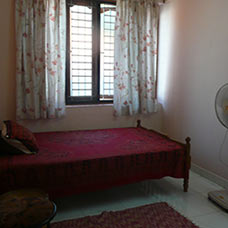
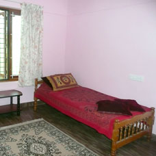

-
Welcome to Kovalam In God's Own Country Kerala



Furnished A/C and non A/C rooms available for short-term stay at Kovalam, Camrose House
Rooms in a furnished, self contained, self catering, first floor flat with a separate entrance from the front courtyard of Camrose House are offered for rent. It is situated in a secure, quiet environment near Kovalam beach on the Arabian Sea, in rural Muttacaud, which is fifteen kilometres from Trivandrum International Airport and a ten minute rickshaw drive from Kovalam.
ENQUIRIES
Camrose,
Muttacaud ,
Kovalam
Thiruvananthapuram ,
Kerala , pin-695523
Email : rvijayannair.camrose@gmail.com
WhatsApp : 0091 8075485434
Mobile : 0091 9847661517
-
Courtyard Entrance

-
Kitchen

-
Bedroom

-
Bedroom/Living Room

-
Additional Facilities - Yoga

-
Directions
-
The accomodation consists of the entrance and balcony,leading to a fitted kitchen and three bedrooms,one with an en suite bathroom and A.C and two with en suite shower and toilet facilities.One of these can be converted into a living room if desired.The beds consist of one king size,one small double and singles.All rooms have ceiling fans and window mosquito nets. Above the rooms is a roof terrace.There is also access to the patio overlooking the wild garden of coconuts behind the house.
The accomodation,for short or long term,is suitable as a holiday let or for working professionals or visiting professionals at, for example, Techno Park. A complimentary breakfast is available on first arrival.
Vijayan Nair, has been a professional Hatha Yoga teacher for many years, and can give Yoga lessons on the premises, if required.